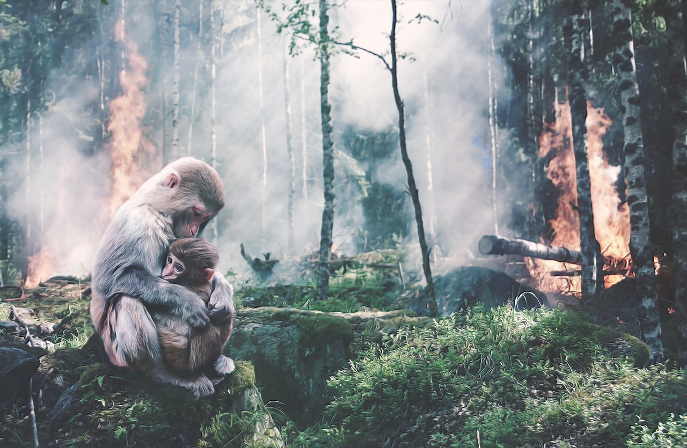
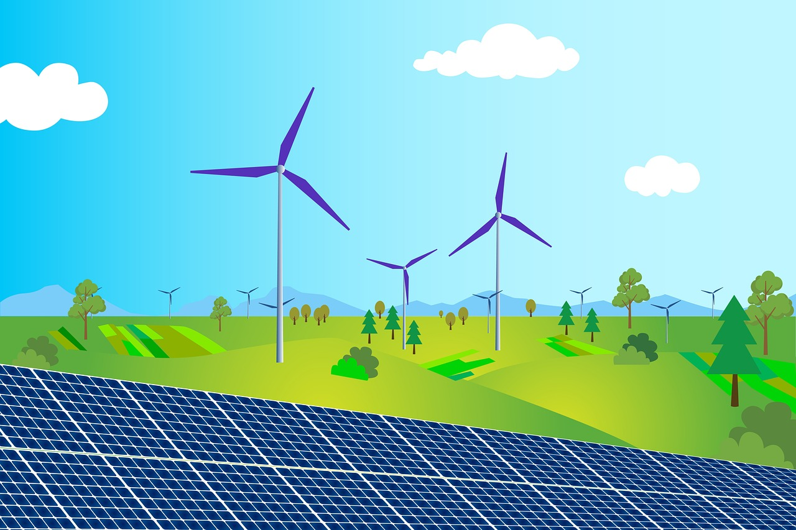
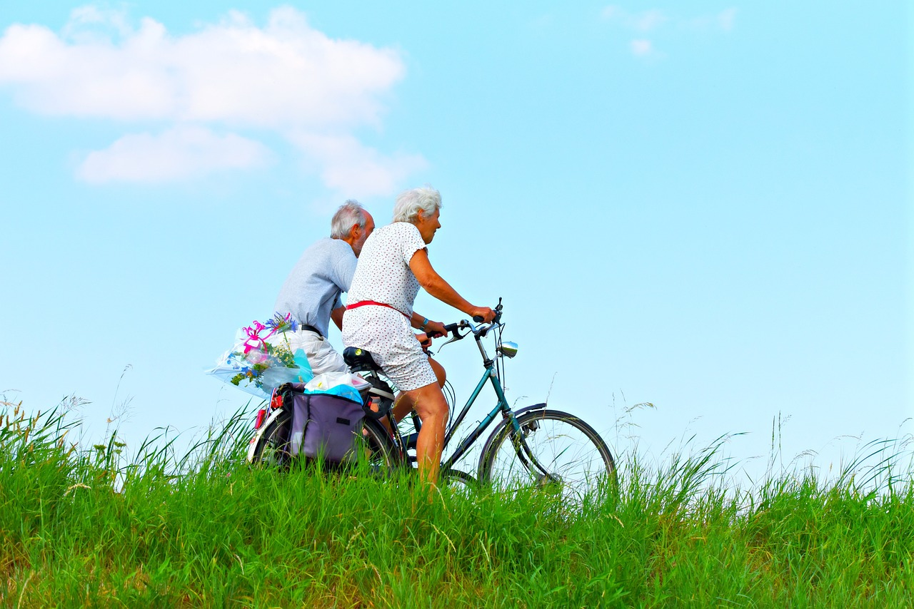
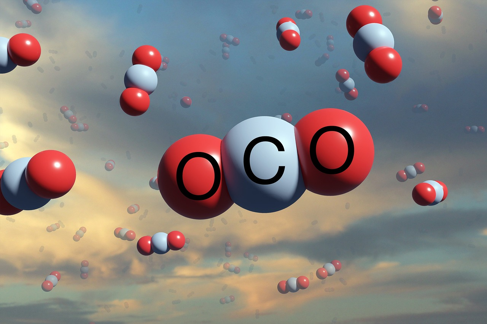

Climate change is the alteration of the Earth's climate due to natural and human causes.
It impacts the weather, the oceans, the ice, and the life on the planet. It is a global challenge that requires urgent action.

Take Actions

Switching to renewable sources of energy, that do not emit greenhouse gases and reduce the dependence on fossil fuels.Reforestation and afforestation, which involve planting new trees or restoring existing forests, acts as natural carbon sinks.

Adopting green transportation modes, such as electric vehicles, public transit, cycling, and walking, that reduce the use of gasoline vehicles.

Implementing carbon capture and storage(CCS) technologies, which involve capturing carbon dioxide from large sources and storing it underground.
You are the last, best hope of Earth. We ask you to protect it. Or we, and all living things we cherish, are history.
-Leonardo DiCaprio, actor and environmentalist
Call to action! It's time!
Now, that we have taken enough from Mother Earth, its time to give it back!